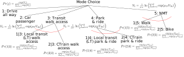
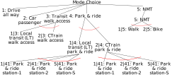

Lecture 6 - Advanced Choice Models
ENCI707: Engineering Demand and Policy Analysis
Outline
- Choice bundle
- Sequential logit model
- Simultaneous logit model
- Nested logit model
- Estimation
- Correlation
- Elasticity
- Application to address IIA
- Nested logit model with scale heterogeneity
- Nested logit examples
- Introduction to GEV
- MNL/NL as GEV models
- Introduction to mixed logit
Discrete Choice of Choice Bundles
Discrete Choice: Choice Bundle
- Choice bundle, for example choice of making a shopping trip at a particular location:
- Choice of making a shopping trip compared with no trip or any other trips.
- Choosing a mode of travel to reach a destination.
- Choosing a particular location over other possible locations.
- Different substitution patterns may exist in three components of shopping trip choice.
- Overall, a single discrete choice but multiple components of choices.
- Individual component have no meaning
Discrete Choice: Choice Bundle
- Choice of Park & Ride as a mode to make commuting trip:
- Choice of Park & Ride station location
- Choice of Park & Ride over all other possible modes, e.g., drive all way, car passenger, transit all way
- Different substitution patterns may exist between choices of modes as well as between alternative Park & Ride station locations
- Overall, a single discrete choice but multiple components of choices
- Individual component have no meaning
Modelling Choice Bundles
- We can break the choice components to capture substitution patterns that exist at different component levels
- Modelling the choice components
- Sequentially model individual choice components
- Specifying a combinatorial space of choice components and model simultaneously as a single discrete choice
- Modelling as hierarchical choice where choice components can be nested within another choice:
- More correlated choices are nested within less correlated choices
- Example: if people are more likely to switch shopping location than travel mode to shopping, location choice is nested within mode choice
Modelling Choice Bundles
- Breaking the choice components to capture substitution patterns that exist at different component level is a technical approach
- Breaking a choice bundle does not define the sequence of choices:
- Shopping location choice nested within shopping trip mode choice does not mean location choice is chosen first then mode is chosen!
- Nesting is about correlation among choice alternatives
Sequential Logit Model of Choice Bundle
Sequential Logit Model of Choice Bundle
- Examples: Mode (\(m\)) and Destination Choice (\(d\)):
- Choose destination
- Then choose mode, given (conditional upon) the destination choice
- Sequentially modelling the choices of alternatives step by step
Sequential Logit Model of Choice Bundle
\[Pr(d) = \frac{\exp(V_d)}{\sum_{d' \in D} \exp(V_d')} \text{, } Pr(m|d) = \frac{\exp(V_{m|d})}{\sum_{m' \in M} \exp(V_{m'|d})}\] - Joint probability of choice \[Pr(md) = \frac{\exp(V_d)}{\sum_{d' \in D} \exp(V_d') \sum_{m' \in M} \exp(V_{m'|d})}\] \[Pr(md) = \frac{\exp(V_d + V_{m|d})}{\sum_{d' \in D} \exp(V_{d'})} \frac{\exp(V_{m|d})}{\sum_{m' \in M} \exp(V_{m'|d})}\]
Sequential Logit Model of Choice Bundle
- Conditions are arbitrary: the estimation process does not allow any verification of the validity of it
- If the actual conditional relationship is opposite to what is assumed in the model, the model will give wrong forecast
- Sequential estimation does not capture relative difference in substitution patterns between different choice component of the bundle
- Parameter estimation is inefficient and biased
Estimation: Sequential Logit Model
- Closed form, so classical estimation techniques are feasible: Maximum Likelihood
- Likelihood of one observation i for mode choice: \[𝐿_𝑖=\prod_{𝑚=1}^𝑀(Pr(𝑚_𝑖))^{\delta_𝑚} \text{, } \delta_m = 1 \text{ if the chosen mode is m; 0 otherwise}\]
- Likelihood of one observation i for destination choice: \[𝐿_𝑖=\prod_{𝑑=1}^𝐷(Pr(𝑑_𝑖))^{\delta_𝑑} \text{, } \delta_d = 1 \text{ if the chosen destination is d; 0 otherwise}\]
- Specification test, statistical significance, goodness-of-fit, elasticity/marginal effect: as explained for MNL
Simultaneous Logit Model of Choice Bundle
Simultaneous Logit Model of Choice Bundle
- Restructure the sequential decisions into a finite number of alternative pairs
- Alternative pairs are mutually exclusive and collectively exhaustive: single discrete choice case
- The example of mode(m) and destination(d) choice: \[Pr(md) = \frac{\exp(V_d + V_{m|d})}{\sum_{d' \in D}\sum_{m' \in M} \exp(V_{d'} + V_{m'|d})}\]
Simultaneous Logit Model of Choice Bundle
\[Pr_{𝑚𝑑} = \frac{\exp(𝑉_𝑑+𝑉_{𝑚|𝑑})}{\sum_{𝑑'\in 𝐷}\sum_{𝑚'\in 𝑀} \exp(𝑉_{𝑑'} +𝑉_{𝑚'|𝑑'})}\] \[Pr_{𝑚𝑑}=\frac{\exp(𝑉_𝑑+𝑉_{𝑚|𝑑})}{\sum_{𝑑'\in 𝐷} \exp(𝑉_{𝑑'}) \sum_{m'\in M}\exp(𝑉_{𝑚'|𝑑'})}\] \[Pr_{𝑚𝑑}=\frac{\exp(𝑉_𝑑+𝑉_{𝑚|𝑑})}{\sum_{𝑑'\in 𝐷} \exp(𝑉_{𝑑'} + \ln(\sum_{m'\in M}\exp(𝑉_{𝑚'|𝑑'})}\]
Simultaneous Logit Model of Choice Bundle
- Deriving marginal choice probability from simultaneous choice probabilities: \[Pr(𝑑) = \sum_𝑚 Pr(𝑚𝑑) = \frac{\sum_𝑚 \exp(𝑉_𝑑+𝑉_{𝑚|𝑑})}{\sum_{𝑑'\in 𝐷} \exp(𝑉_{𝑑'}+\ln(\sum_{𝑚' \in 𝑀} \exp(𝑉_{𝑚'|𝑑'})}\] \[Pr(𝑑)=\frac{ \exp(𝑉_𝑑+\ln(\sum_{m \in M} \exp(V_{m|d})))}{\sum_{𝑑'\in 𝐷} \exp(𝑉_{𝑑'}+\ln(\sum_(𝑚' \in 𝑀) \exp(𝑉_{𝑚'|𝑑'})}\] \[Pr(𝑚)=\sum_{d} Pr(md) = \frac{\sum_d \exp(V_d + V_{m|d})}{\sum_{d' \in D} \exp(V_d + \ln(\sum_{m' \in M} \exp(V_{m'|d})))}\]
Simultaneous Logit Model of Choice Bundle
- Deriving sequential model from the joint model: \[Pr(𝑚│𝑑)=\frac{Pr(𝑚𝑑)}{Pr(𝑑)} = \frac{\exp(𝑉_𝑑+𝑉_{𝑚|𝑑})}{\exp(𝑉_{𝑑'})\sum_{𝑚'\in 𝑀} \exp(V_{m'|d})}\] \[Pr(𝑚│𝑑) = \frac{\exp(𝑉_{𝑚|𝑑})}{\sum_{𝑚' \in 𝑀} \exp(𝑉_{𝑚'|𝑑'})}\]
- The simultaneous model captures the influence of lower-level choice in the upper level by adding \(\ln(\sum \exp(V_{m|d}))\),
- Often called Inclusive Value (IV) or Expected Maximum Utility (EMU) of lower-level choice
- However, it ignores the scale difference (differences in randomness) in two levels
Simultaneous Logit Model of Choice Bundle
- Unlike sequential model, simultaneous model incorporates expectations of conditional level utility at the conditioning levels:
- Systematic utility of destination choice: \[\widetilde{V_d} = V_d + \text{{Expected Maximum Utility of choice of mode}}_d\]
- Scale parameters are same (unity) at both levels
Estimation: Simultaneous Logit Model
- Closed form, so classical estimation techniques are feasible: Maximum Likelihood
- Likelihood of one observation \(i\): \[𝐿_𝑖=\prod_{𝑑𝑚=1}^{𝐷𝑀} (Pr(𝑑_𝑖 𝑚_𝑖))^{\delta_{𝑑𝑚}} \] \[\delta_{𝑑𝑚}=1 \text{ if the chosen mode m and destination d pair is chosen; 0 otherwise}\]
- Specification test, statistical significance, goodness-of-fit, elasticity/marginal effect: as explained for MNL
Nested Logit Model of Choice Bundle
Nested Logit Model
\[U_{m|d} = V_{m|d} + \epsilon_{m|d} \text{ (Lower-level conditional utility function)}\] \[\begin{align} U_{d} = V_d + (V_{m|d} + \epsilon_{m|d}) + \epsilon_d = \widetilde{V_d} + \epsilon_d & \text{ (Upper-level unconditional} \\ & \text{utility function for a pair of d-m)} \end{align}\] \[\begin{align} \widetilde{V_d} = V_d + (V_{m|d} + \epsilon_{m|d}) & \text{ (Upper-level compounded} \\ & \text{systematic utility for a pair of d-m)} \end{align}\] \[\epsilon_d \sim\text{IID EV Type I with scale, }\mu_1\text{; }Var(\epsilon_d)=\pi^2/6\mu^2_d\] \[\epsilon_{m|d} \sim\text{IID EV Type I with scale, }\mu_2\text{; }Var(\epsilon_{m|d})=\pi^2/6\mu^2_m\]
Nested Logit Model
- Conditional choice of mode (\(m\)) for a give destination (\(d\)): an MNL model: \[Pr(m|d) = \frac{\exp(\mu_m V_{m|d})}{\sum_{m'\in M}\exp(\mu_m V_{m'|d})}\]
- The expected maximum utility (EMU) of lower-level choice (\(m\)) for a particular upper-level choice alternative (\(d\)) is: \[EMU=\frac{1}{\mu_m} \ln\left(\sum_{m'|M}\exp(\mu_m V_m'|d)\right)\]
- We can derive the compounded systematic utility of upper-level choices as: \[\widetilde{𝑉_𝑑}=\mu_𝑑 𝑉_𝑑+\frac{\mu_𝑑}{\mu_𝑚} \ln\left(\sum_{m' \in 𝑀} \exp(\mu_𝑚 𝑉_{𝑚'|𝑑})\right)\]
Nested Logit Model
- We can define \(\phi=\mu_𝑑∕\mu_𝑚\) where \(\phi\) is known as the inclusive value or logsum parameter
- The unconditional probability of an upper-level choice alternative: an MNL \[Pr(d) = \frac{\exp(\widetilde{V_d})}{\sum_{d' \in D}\exp(\widetilde{V_{d'}})}\] \[Pr(d) = \frac{\exp(\mu_d V_d + \phi \ln(\sum_{m' \in M} \exp(\mu_m V_{m'|d})))}{\sum_{d' \in D}\exp(\mu_d V_{d'} + \phi \ln(\sum_{m' \in M} \exp(\mu_m V_{m'|d'})))}\]
- Scales should be non-negative
- Scale approaching 0 indicates infinite variance, so fully random choice
- Scale approaching \(+\infty\) indicates zero-approaching variances, so deterministic choice
Nested Logit Model
- To be a RUM choice model, the scale of the lower-level conditional choices should be higher than the scale of the upper-level choice (the opposite is true for variance) \[0 \leq (\phi = \frac{\mu_d}{\mu_m}) \leq 1 \text{; i.e., } \mu_m \geq \mu_d\]
- Both scales are not identified individually, but, normalizing one of them make the other identified - normalize upper-level scale to 1
- Considering \(\mu_d=1 \therefore \mu_m > 1 \text{ & } \phi < 1\) \[\phi > 1 \text{ means nests should be reversed}\] \[\phi =1 \text{ means choice process is simultaneous}\] \[\phi =0 \text{ means choice process is sequential}\] \[\phi <0 \text{ means no joint choice - i.e., Tversky's elimination by aspects model}\]
Estimation: Nested Logit Model
- Closed form, so classical estimation techniques are feasible: e.g., Maximum Likelihood
- Likelihood of one observation i: \[L_i = \prod_{d=1}^D\left(Pr(d_i)\prod_{m=1}^M Pr(m_i)^{\delta_m} \right)^{\delta_d}\] \[\delta_m = 1 \text{ if chosen mode is m; 0 otherwise & }\delta_d = 1 \text{ if chosen destination is d; 0 otherwise}\]
- Specification test, statistical significance, goodness-of-fit: as explained for MNL
- Testing significance of scale parameter: with \(\mu_𝑑\) normalized to 1, \(\mu_𝑚\) should be significantly greater than 1 \[t-statistic = \frac{\mu_m - 1}{se(\mu_m)} \text{> 1.64 supports nesting structure}\]
Nested Logit Model: Correlations
- The nesting structure induces a correlations pattern:
- Upper-level choices are IIA, so correlations among unobserved utilities are zero
- Conditional lower-level choices are IIA (within a nest), so, correlations among unobserved utilities are zero
- However, as they related to the upper-level choices, nested lower-level choices have a block correlation
- In our case, the (approximate) correlations among the choices of \(m\) for a particular choice of \(d\) is: \[\text{nest coefficient, } \rho = 1 - \left(\frac{\mu_d}{\mu_m}\right)^2\]
Nested Logit Model: Elasticities
Nested Logit Model: Elasticities
Nested Logit
- Same procedures as MNL are applicable for NL:
- Goodness-of-fit
- Specification test
- Validation
- Collinearity, budget/income effect
- Market segmentation
- Aggregating elasticity/marginal effects
- Elasticity of attribute of choice alternatives, attributes of choice makers, or categorical variables
- Policy evaluations
Interpretation of Nesting in NL Model
- Scale is inverse of variance: higher scale means lower randomness (variance) and higher correlations
- If choice of \(m\) is nested within the choice of \(d\), it means that choice maker is more likely to switch \(m\) choices before switching \(d\) choices
- Block correlations of nested choices explain the strength/patterns of such differential switching between different levels of nested logit model
IID and Nested Logit Model
- Consider a route choice problem: In network, multiple alternative routes having common link will have correlated properties.
- Example: 2 routes with no partial overlap. Under equilibrium, both have the same average travel time: \(t_1=t_2=t\)
- Consider: systematic utility of choosing a route: \(V_r=V_1=V_2=-t\)
- Logit choice probability: \[Pr(route1) = Pr(route2) = \frac{\exp(V_1)}{\exp(V_1)+\exp(V_2)} = \frac{\exp(-t)}{\exp(-t)+\exp(-t)} = 0.5\]
IID and Nested Logit Model
- Add a 3rd route that has partial overlap with route 2
- Under equilibrium, all have the same average travel time: \(t_1=t_2=t_3=t\)
- Consider: systematic utility of choosing a route: \(V_1=V_2=V_3=-t\)
- Logit choice probability: \[Pr(routeX) = \frac{\exp(V_X)}{\exp(V_1)+\exp(V_2)+\exp(V_3)} = \frac{\exp(-t)}{\exp(-t)+\exp(-t)+\exp(-t)} = 0.33\]
- Route 2 and 3 are very similar!
IID and Nested Logit Model
- Let us change the utility structure \[U_1 = V_1 + \epsilon_1\] \[U_2 = V_2 + w + \epsilon_2\] \[U_3 = V_3 + w + \epsilon_3\]
- Commonalities between 2 and 3 by common \(w\) lead to correlation with respect to common \(\epsilon\).
- Further assumption:
- \(\epsilon\) are IID Type I EV, with scale \(\mu_1\)
- \(w\) are IID Type I EV, with scale \(\mu_2\)
- Normalizing \(\mu_1 = 1\) and defining \(\phi=1/\mu_2\)
IID and Nested Logit Model
\[Pr(2|R) = \frac{\exp(V_{2|R}/\phi)}{\exp(V_{2|R}/\phi)+\exp(V_{3|R}/\phi)} \text{; }Pr(3|R) = \frac{\exp(V_{3|R}/\phi)}{\exp(V_{2|R}/\phi)+\exp(V_{3|R}/\phi)}\] \[V_{2|R}=V_{3|R}=-t \therefore Pr(2|R)=Pr(3|R)=0.5\]
So, the inclusive value of lower-level choice: \[I_R = \phi \ln(\exp(-\frac{t}{\phi})+\exp(-\frac{t}{\phi})) = -t + \phi ln(2)\]
Upper-level utility (considering vr =0): \[V_R = v_r + I_R = -t + \phi \ln(2)\]
Probability of choosing Route 1: \[Pr(1) = \frac{\exp(-t)}{\exp(-t) + \exp(-t + \phi \ln(2))} = \frac{1}{1 + 2^{\phi}}\]
Nested Logit Model for Single Choice
\[\text{For } \phi=0 \text{; }Pr(1)=\frac{1}{1+2^{\phi}} = 1/2\] \[\text{For } \phi=1 \text{; }Pr(1)=\frac{1}{1+2^{\phi}} = 1/3\] \[\text{For } 0<\phi<1 \text{; }Pr(1)=\frac{1}{1+2^{\phi}} < 1/2\]
- Nested Logit (NL) model can capture various levels of correlated properties (substitution patterns) among alternatives of a single choice (as opposed to choice bundle) through the nesting structure:
- Within a particular nest*, alternatives are IIA
- Between nests, various levels of substitution patterns are captured through nesting structures
Nested Logit to Address IIA
Variance-Covariance Matrix of Utility Functions (assuming unit scale) \[\frac{\pi^2}{6} \begin{bmatrix} 1 & \cdots & 0 \\ \vdots & \ddots & \vdots \\ 0 & \cdots & 1 \end{bmatrix}\text{; }Pr(j) = \frac{\exp(V_j)}{\sum_{k=1}^7 \exp(V_k)}\]
Nested Logit to Address IIA
Nested Logit to Address IIA
\[\begin{bmatrix} \sigma^2 & 0 & 0 & 0 & 0 & 0 & 0 & 0\\ 0 & \sigma^2 & 0 & 0 & 0 & 0 & 0 & 0\\ 0 & 0 & \sigma^2 & \rho_T \sigma^2 & 0 & 0 & 0 & 0\\ 0 & 0 & \rho_T \sigma^2 & \sigma^2 & 0 & 0 & 0 & 0\\ 0 & 0 & 0 & 0 & \sigma^2 & \rho_P \sigma^2 & 0 & 0\\ 0 & 0 & 0 & 0 & \rho_P \sigma^2 & \sigma^2 & 0 & 0\\ 0 & 0 & 0 & 0 & 0 & 0 & \sigma^2 & \rho_N \sigma^2\\ 0 & 0 & 0 & 0 & 0 & 0 & \rho_N \sigma^2 & \sigma^2\\ \end{bmatrix}\]\[\text{TWA nest: } \rho_T = 1 - (1/\mu_T)^2 \text{; P&R nest: } \rho_P = 1 - (1/\mu_P)^2 \text{; NMT nest: } \rho_N = 1-(1/\mu_N)^2\]
Nested Logit to Address IIA
Nested Logit to Address IIA
\[\begin{align} \begin{array}{lcl} \text{Station location } & Pr(s|41) = \frac{\exp(\mu_{SLT} V_S)}{\sum_{k=1}^S \exp(\mu_{SLT} V_k)} & V_{1|4}=\frac{1}{\mu_{SLT}} \ln \left(\sum_{k=1}^S \exp(\mu_{SLT} V_k)\right)\\ \text{choice for P&R } & Pr(s|42) = \frac{\exp(\mu_{SGP} V_S)}{\sum_{k=1}^S \exp(\mu_{SCT} V_k)} & V_{1|4}=\frac{1}{\mu_{SCT}} \ln \left(\sum_{k=1}^S \exp(\mu_{SCT} V_k)\right)\\ \text{Choice of LT } & Pr(1|4) = \frac{\exp(\mu_{P} V_{1|4})}{\sum_{k=1}^2 \exp(\mu_{P} V_{k|4})} & V_{4}=\frac{1}{\mu_{P}} \ln \left(\sum_{k=1}^2 \exp(\mu_{P} V_{k|4})\right)\\ \text{/CTrain for P&R } & Pr(2|4) = \frac{\exp(\mu_{P} V_{2|4})}{\sum_{k=1}^2 \exp(\mu_{P} V_{k|4})} & \\ \text{Choice of LT } & Pr(1|3) = \frac{\exp(\mu_{T} V_{1|3})}{\sum_{k=1}^2 \exp(\mu_{T} V_{k|3})} & V_3=\frac{1}{\mu_{T}} \ln \left(\sum_{k=1}^2 \exp(\mu_{T} V_{k|3})\right)\\ \text{/CTrain for walk access } & Pr(2|3) = \frac{\exp(\mu_{T} V_{2|3})}{\sum_{k=1}^2 \exp(\mu_{T} V_{k|3})} & \\ \end{array} \end{align}\]
\[\text{Main mode choice } Pr(j) = \frac{\exp(V_j)}{\sum_{k=1}^5 \exp(V_k)}\]
Nested Logit & Heteroskedastic (systematic) Covariance
\[\text{P&R nest: } \rho_P = 1-(1/\mu_P)^2\] Homoskedastic error variance \[\sigma^2 = \pi^2/6\] \[\mu_T>1 \text{; } \mu_{SLT} > \mu_P\] \[\mu_{SCT} > \mu_P \text{; } \mu_P > 1\]
\[\begin{align} \omega_{LT} = & \begin{bmatrix} \sigma^2 & \cdots & \rho_{SLT}\omega^2 \\ \vdots & \ddots & \vdots \\ \rho_{SLT}\sigma^2 & \cdots & \sigma^2 \\ \end{bmatrix} \\ \end{align}\] \[\rho_{SLT} = 1-(\mu_P/\mu_{SLT})^2\]
\[\begin{align} \omega_{CT} = & \begin{bmatrix} \sigma^2 & \cdots & \rho_{SCT}\omega^2 \\ \vdots & \ddots & \vdots \\ \rho_{SCT}\sigma^2 & \cdots & \sigma^2 \\ \end{bmatrix} \\ \end{align}\] \[\rho_{SCT} = 1-(\mu_P/\mu_{SCT})^2\]
Application of Nested Logit Model: Examples
Introduction to GEV
Models
- MNL: A Special Case of GEV
- NL: A Special Case of GEV
- Ordered GEV (OGEV) model
- Paired Combinatorial Logit (PCL) model
- Generalized Logit (GenL) model
- Generalized Nested Logit/Cross-Nested Logit Model
RUM-Based Discrete Choice Model
- RUM-based discrete choice probability (2 alternatives): \[Pr(j|C_i) = Pr((V_j+\epsilon_j) \ge (V_k+\epsilon_k)) \text{; }C_i \text{ is choice set}\] \[Pr(j|C_i) = Pr(\epsilon_k \le (V_j-V_k+\epsilon_j))\] \[Pr(j|C_i) = \int_{\epsilon_j=-\infty}^{+\infty}\left(\int_{\epsilon_k=-\infty}^{(V_j-V_k+\epsilon_j)} f(\epsilon_j,\epsilon_k)d \epsilon_k \right)d\epsilon_j \text{; }k\neq j \text{; }j,k\in C_i\]
- Multiple alternatives: \[Pr(j|C_i) = \int_{\epsilon_j=-\infty}^{+\infty}\left(\int_{\epsilon_1=-\infty}^{(V_j-V_1+\epsilon_j)} \cdots \int_{\epsilon_k=-\infty}^{(V_j-V_k+\epsilon_j)} f(\epsilon_j,\epsilon_k)d \epsilon_1 \cdots d \epsilon_k \right)d\epsilon_j\]
RUM-based Discrete Choice Model
\[Pr(j|C_i) = \int_{\epsilon_j=-\infty}^{+\infty}\left(\int_{\epsilon_1=-\infty}^{(V_j-V_1+\epsilon_j)} \cdots \int_{\epsilon_k=-\infty}^{(V_j-V_k+\epsilon_j)} f(\epsilon_j,\epsilon_k)d \epsilon_1 \cdots d \epsilon_k \right)d\epsilon_j\]
Equivalently \[Pr(j|C_i) = \int_{\epsilon_j=-\infty}^{+\infty} F\left((V_j-V_1+\epsilon_j) \cdots \epsilon_j \cdots (V_j - V_k + \epsilon_j) \right) d \epsilon_j\]
Joint CDF of random utilities \(F(\epsilon_1 \cdots \epsilon_j \cdots \epsilon_k)\)
Partial derivative of joint CDF, \(F(\cdots)\) with respect to \(\epsilon_j\) \[F_j(\cdots) = \partial F(\cdots)/\partial \epsilon_j\]
Generating Function & GEV Model
McFadden (1978). Modelling the Choice of Residential Location,” in Spatial Interaction Theory and Planning Models, ed. by Anders Karlqvist, et al. Amsterdam: North-Holland Publishing Company, pp. 75-96
- Generating function: A formal power series (polynomial function) that encodes an infinite sequence of 𝑥 (place holder rather than a number) by treating them as the coefficient of the power series: especially powerful for recurring relationships
- the function may not be a true function and the variables may be intermediate information units
- Instead of dealing with infinite sequence, generating function gives a single function that encodes the sequence
- A generating function expresses a sequence (the sequence of coefficients): the 𝑖𝑡ℎ term of the sequence is the coefficient of 𝑥𝑖 in the generating function
GEV Generating Function, G(..)
- Define a generating function \(G(\cdots))\) for the multivariate joint distribution of random utilities (\(\epsilon\)) as \[F(y_1,y_2,\cdots,y_j,\cdots,y_k) = \exp(-G(e^{-y_1},e^{-y_2},\cdots,e^{-y_J}))\]
- Following properties are key for the \(G()\) function:
- \(G(y)\ge 0\) for any argument, \(𝑦\)
- \(G(y)\) is homogenous of degree \(D >0\). This means \(G(\alpha y_1,\alpha y_2,\cdots,\alpha y_J) = \alpha^D G(y_1,y_2,\cdots,y_J)\) for \(\alpha>0\)
- \(\lim_{y_j->\infty} G(y_1,y_2,\cdots,y_J)=+\infty\) for \(j=1,2,\cdots,J\)
- Cross partial derivatives exists and are continuous. Signs change in a particular way:
\[G_j(\cdots)=\frac{\partial G(\cdots)}{\partial y_j}>0 \text{ for all }j\] \[G_{jk} = \frac{G_j(\cdots)}{\partial y_k} \le 0 \text{ for }j \neq k \text{; } G_{jkl}(\cdots) = \frac{\partial G_{jk}(\cdots)}{\partial y_l} \ge 0 \text{ for distinctive j,k,l}\]
Generalized Extreme Value (GEV) Model
\[Pr(j|C_i) = \int_{\epsilon_j=-\infty}^{+\infty} F\left((V_j-V_1+\epsilon_j) \cdots \epsilon_j \cdots (V_j - V_k + \epsilon_j) \right) d \epsilon_j\] - Using GEV generating function \[F(y_1, \cdots, y_j, \cdots, y_k) = \exp(-G(e^{-y_1},\cdots,e^{-y_j},\cdots, e^{-y_k}))\] \[F(y_1, \cdots, y_j, \cdots, y_k) = \partial F(\cdots)/\partial y_j\] \[F(y_1, \cdots, y_j, \cdots, y_k) = \exp \left(-G(e^{-y_1},\cdots, e^{-y_k})e^{-y_j}G_j(e^{-y_1},\cdots, e^{-y_k})\right)\] - Applying Euler’s formula and homogeneity conditions in \(F_j(\cdots)\) of the integral of \(Pr(j)\), results in a closed form function: \[Pr(j|C_i) = \frac{e^{V_j}G_j(e^{V_1},\cdots,e^{V_j,\cdots e^{V_k}})}{G(e^{V_1},\cdots,e^{V_j,\cdots e^{V_k}})}\]
Generalized Extreme Value (GEV) Model
- Choice probability of a GEV model based on the GEV generating function (for \(G(\cdots)\) of homogenous to degree 1)
\[Pr(j|C_i) = \frac{e^{V_j}G_j(e^{V_1},\cdots,e^{V_j,\cdots e^{V_k}})}{G(e^{V_1},\cdots,e^{V_j,\cdots e^{V_k}})}\]
The general formulation of Choice Probability of a GEV model based on the GEV generating function \[Pr(j) = \frac{y_j G_j(\cdots)}{DG(\cdots)} \text{; D is a degree of homogeneity & }y_j \text{ is argument, }e^{V_j} \text{ above}\]
Expected Maximum Utility of the GEV model generated by the \(G(\cdots)\) function: \[\overline{U} = \frac{1}{D} (\ln(G(\cdots)) + \gamma \text{; }\gamma \text{ is Euler's constant & D is homogeneity degree defined by scale parameter} \] \[Pr(j) = \frac{\partial \overline{U}}{\partial y_j} = \frac{y_j \partial G(\cdots)/\partial y_j}{DG(\cdots)}\]
Generalized Extreme Value (GEV) Model
\[Pr(j|C_i) = \frac{y_j G_j(y_1,\cdots,y_k)}{D G(y_1,\cdots, y_k)}\]
- GEV mode is the most flexible closed-form model that can capture a wide variety of choice models: For different generating function, different choice model can arise. MNL and NL are special cases of the GEV model
- Other GEV models: Network GEV, Cross-nested Logit, Paired-Combinatorial Logit etc. for the \(G(\cdots)\) function with degree, \(\mu\)
Estimation: GEV Model
- GEV models are of closed form and so can be estimated using classical estimation technique: Maximum likelihood
- However, the conditions on scale (similarity or dissimilarity) parameters needs to be met
- Constrained Maximum Likelihood (CML) method for the GEV model estimation that maintains restrictions on parameter value range while estimating
- One can use mathematical expressions to ensure such conditions while using classical Maximum Likelihood approach
- Classical Maximum Likelihood is less computationally intensive than the CML
Multinomial Logit as a GEV Special Case
Multinomial Logit Model
\[Pr(j|C_i) = \frac{e^{V_j} G_j(e^{V_1},\cdots,e^{V_k})}{G(e^{V_1},\cdots,e^{V_k})} \text{; Homogeneous of degree, D=1}\]
- The case of MNL: Consider the following \(G(\cdots)\) function as an additive function of the exponential of systematic utility functions
\[𝐺(\cdots)=\sum_{𝑘=1}^𝐽(𝑒^{\mu V_k} )^{1/\mu} \text{; } k=1, 2,\cdots, J \in C_i \text{; an indirect CES structure}\] \[G_j(\cdots) = \frac{\partial \sum_{k=1}^J e^{V_k}}{\partial e^{V_j}} = 1 \text{; considering } \mu = 1\] \[\therefore Pr(j|C_i) = \frac{e^{V_j}}{\sum_k e^{V_k}}\]
Nested Logit as a GEV Special Case
Nested Logit Model
- Consider J alternatives nested in k non-overlapping nests:
\[𝐺(\cdots)=\sum_{𝑙=1}^𝐾\left(\sum_{𝑗\in𝐵_𝑙}𝑒^{𝜇_𝑙 𝑉_𝑗}\right)^{1⁄\mu_l}\]
- \(K\) = total nests; \(B_l\) is the alt set in nest \(l\)
- \(\mu_l\) is the nest \(l\)-specific scale & \(0 < \mu_l < 1\)
- \(e^{\mu_l V_j}\) is the argument
- \(G(\cdots)\) is homogeneous to degree \(1/\mu_l\)
- An indirect CES structure
- Partial derivative \[G_j(\cdots) = \frac{\partial}{\partial e^{V_j}} \sum_{l=1}^K \sum_{j \in B_l} (e^{\mu_l V_l})^{1/\mu_l} = \frac{\mu_l e^{\mu_l V_j}}{\mu_l}\left(\sum_{j \in B_l} e^{\mu_l V_j}\right)^{1/\mu_l - 1}\] \[\therefore Pr(j|C_i) = \frac{e^{V_j}G_j(\cdots)}{G(\cdots)} = \frac{e^{\mu_l V_j}\left(\sum_{j \in B_l} e^{\mu_l V_j}\right)^{1/\mu_l-1}}{\sum_{l=1}^K \left(\sum_{j \in B_l} e^{\mu_l V_j} \right)^{1/\mu_l}} = \frac{e^{\mu_l V_j}\left(\sum_{j \in B_l} e^{\mu_l V_j}\right)^{1/\mu_l}}{\sum_{j \in B_l} e^{\mu_l V_j} \sum_{l=1}^K \left(\sum_{j \in B_l} e^{\mu_l V_j} \right)^{1/\mu_l}}\]